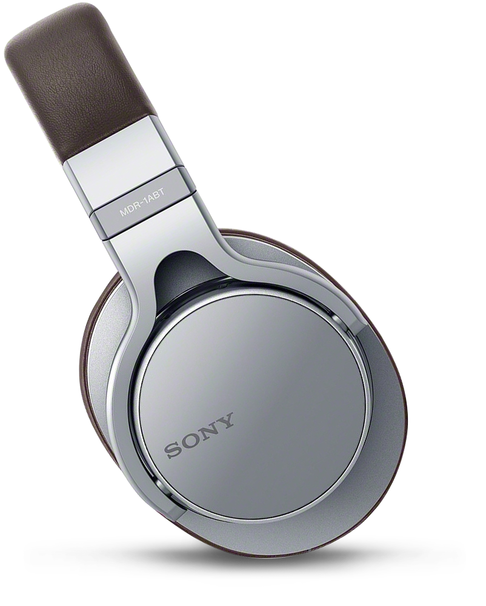

Headphones

Что такое Sony MDR-1ABT?
Sony MDR-1ABT - это беспроводные Bluetooth-наушники, которые не экономят ни на качестве звука, ни на технологиях. Они настолько современны, насколько вы можете надеяться, предлагая функции, соответствующие нынешней тенденции Hi-Res Audio.
Ключевая особенность
- Стоимость обзора: 299,99 фунтов стерлингов.
- 40-мм динамический драйвер
- Bluetooth
- Дополнительный кабель